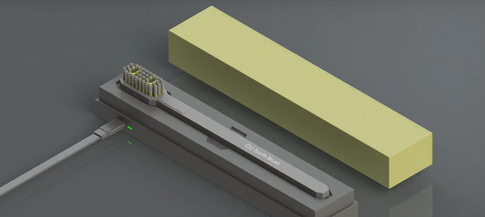
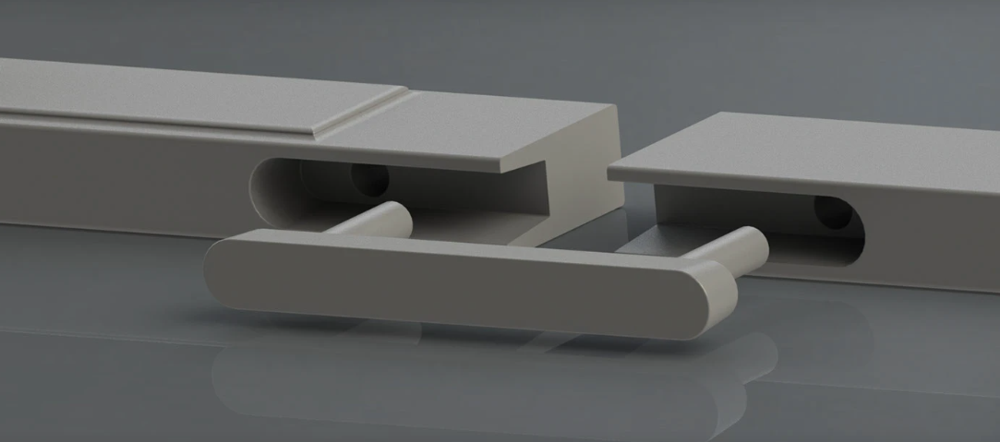
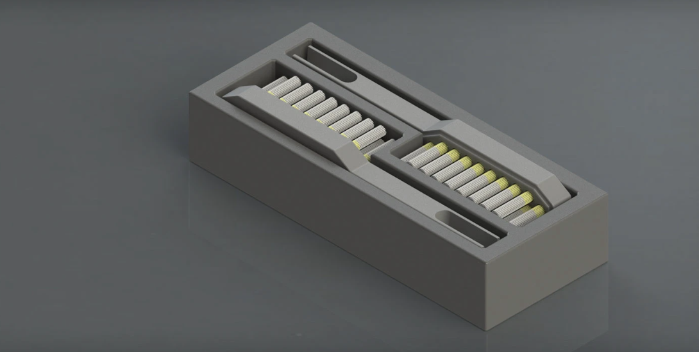

CLI Tooth Brush
Problem:
Manual brushes accumulate bacterial biomass in damp environments and generate non-recyclable polymer waste. Conventional electric systems lack integrated sanitization, while bulky charging bases prevent field deployment.
Solution:
The CLI system combines sonic drive technology with UV-C sanitization in a sliding-interlock travel case. Modular architecture features recyclable brush heads with snap-fit interfaces, housed within slimline polypropylene shells that charge via USB-C induction dock.
Benefits:
- Sanitization: UV-C LED array (265nm) eliminates 99.88% bacterial load during closed-storage cycles
- Sustainability: Replaceable heads reduce polymer waste versus disposable alternatives; polypropylene housing recyclable
- Portability: Rectilinear extrusion profile (≈18mm thickness) with dual-rail sliding mechanism fits compact luggage
- Protection: Enclosed case design prevents cross-contamination and bristle deformation during transit
Functions:
- Mechanical Drive: Sonic vibration motor generating 31,000 strokes/minute via magnetic suspension
- UV Sterilization: Auto-triggered 2-minute sanitization cycle upon case closure, mercury-free LED
- Modular Interface: Tool-free head replacement with tolerance-locked stainless steel pins
- Power System: 800mAh lithium-polymer cell with USB-C PD charging; 30-day standby capacity
Project Gallery



